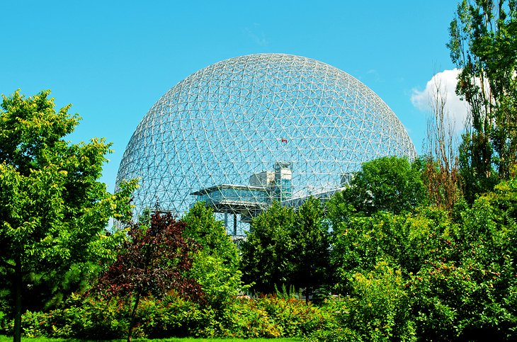

Introduction
Montréal has prospered as a cosmopolitan hub of communications and trade. Jacques Cartier landed here in 1535 and took the territory for his King, François I of France, but it wasn't until 1642 that Paul de Chomedey founded a small mission station here called Ville Marie de Mont-Réal. This original settlement is today Montréal, the second largest French-speaking city in the world. Despite the city's size, the parts of Montreal that interest tourists are in relatively compact neighborhoods.
“Canada will be a strong country when Canadians of all provinces feel at home in all parts of the country, and when they feel that all Canada belongs to them.”
World Famous
Oratoire Saint-Joseph

St. Joseph's Oratory
The Oratoire Saint-Joseph, near the western exit from Mount Royal Park, is dedicated to Canada's patron saint. It is a mecca for pilgrims, with its huge Renaissance-style domed basilica dating to 1924.A cloister behind the church leads up to Mont-Royal.Brother André of the Congrégation de Sainte-Croix had already built a small chapel here in 1904, where he performed miraculous acts of healing for which he was canonized in 1982. There is a good northwest view from the observatory over Montréal and Lac Saint-Louis.
Parc Jean Drapeau

Île Sainte-Hélène (named after the wife of Samuel de Champlain) and the artificial island of Notre-Dame were the site of Expo '67. They are now known as Parc Jean Drapeau and have many family-minded attractions. A remnant of the 1967 world fair, the Biosphere is now a museum dedicated to ecological issues. The building is designed in the shape of a sphere and is the largest such structure in the world. Other tourist attractions on the islands include the rides and games of La Ronde Amusement Park, the historic 1820 British arsenal at the Stewart Museum, Bassin Olympique , and race course Circuit Gilles Villeneuve.
TO LEARN MORE:
Candaian-Tourism
Woodbine-Beach
Top 5 Beaches in Toronto